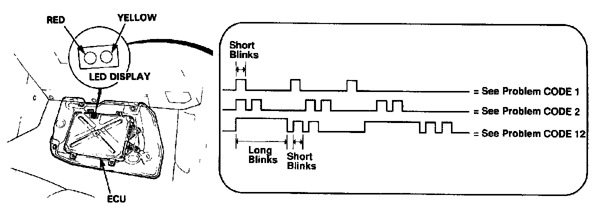

Without Scan Tool
WARNING: All SRS wire harness and connectors are colored yellow. Do not use electrical test equipment on these circuits.If it has been reported that the "CHECK ENGINE" light in the instrument cluster has come on, check the the LED display on the ECU.

SEDAN

COUPE
With the ignition turned ON, the RED LED will indicate a fault code by its blinking frequency. [The YELLOW LED is for idle speed adjustment and is not related to the following troubleshooting codes].
The ECU LED can indicate a single code, or any number of codes simultaneously. When more than one fault is present, the fault codes will be displayed in sequence, and will repeat until the ignition is turned OFF.
NOTE: If the LED is indicating an unassigned fault code:
1. Recheck the code to ensure that you counted correctly.
2. If the indicated code is one of the above, replace the ECU with a known good unit and re-check.
3. If the fault is corrected, the original ECU is faulty.
4. If the fault is not corrected, check for loose or faulty connections in the wiring harness.
The "CHECK ENGINE" warning light and ECU LED may come on, indicating a problem, when the problem is actually a poor or intermittent connection. Always check electrical connections before replacing electronic components.